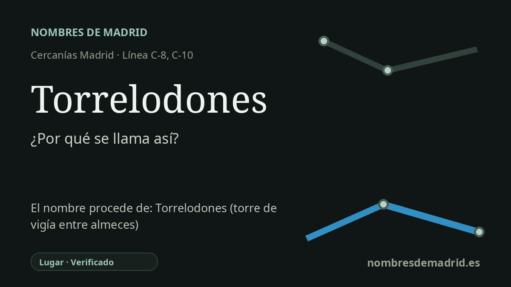

Publicado el · Investigación de Nombres de Madrid · Cómo verificamos cada origen · 7 fuentes consultadas
Respuesta rápida
La estación de Torrelodones toma su nombre del municipio al que sirve. El topónimo significa, en la práctica, “la torre de los lodones”, entendiendo lodones como plural de lodón, el árbol hoy llamado más habitualmente almez.
La historia del nombre
La estación de Torrelodones toma su nombre del municipio de Torrelodones, en el noroeste de la Comunidad de Madrid. Las fuentes de transporte identifican la parada como Torrelodones y la sitúan en el corredor de Cercanías C-8/C-10, mientras que la información municipal la ubica en la zona de la Colonia, a unos tres kilómetros del casco histórico.
Detrás del nombre municipal hay un topónimo más antiguo ligado al paisaje. Toponomasticon Hispaniae analiza Torrelodones como un compuesto castellano de **torre** y **lodones**: el segundo elemento es el plural de **lodón**, árbol hoy llamado más habitualmente **almez** en español. Por tanto, no se trata de un apellido personal, sino de un nombre descriptivo de lugar: la torre asociada a los lodones.
Esa torre es la Torre de los Lodones, también llamada Atalaya de Torrelodones, todavía uno de los símbolos más visibles del municipio. El Ayuntamiento la presenta como el elemento más antiguo y emblemático del patrimonio local y la relaciona con el sistema defensivo andalusí de la frontera central. No se conoce su nombre árabe original; la página histórica municipal subraya que el nombre conservado es romance y, por tanto, posterior a la conquista cristiana de Toledo en 1085.
La cronología exige cierta prudencia. La ficha de partida afirma que el nombre aparece documentado por primera vez en 1287; la página histórica del Ayuntamiento también da 1287 y enumera variantes como Latorrelodones, Latorredelodones, La torre de los Lodones, Torre Lodones y Torrelodones. Sin embargo, la ficha consultada de Toponomasticon cita como forma medieval **La Torre de Lodones** hacia 1340, y después formas modernas como **Torrelodones** en 1591 y **Torre di lodones** en un mapa de 1682.
Existen otras explicaciones locales, entre ellas los lodos acumulados alrededor de la torre, leyendas sobre señores llamados Lodón, Odón u Ordón, y una interpretación latina erudita propuesta por Coromines. La explicación mejor apoyada es la más sencilla: un compuesto romance que alude a una torre y a los árboles llamados lodones. La estación no creó el nombre; lo heredó de un topónimo medieval que ya condensaba en una sola palabra atalaya, vegetación e historia de frontera.